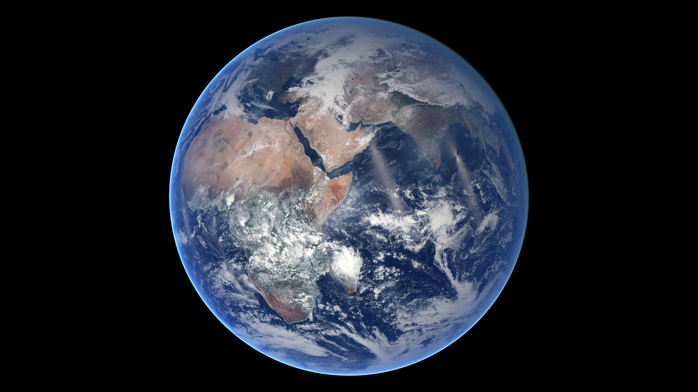
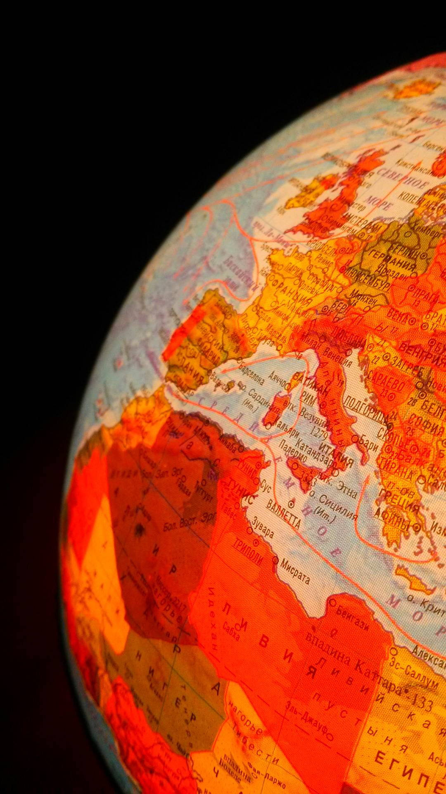
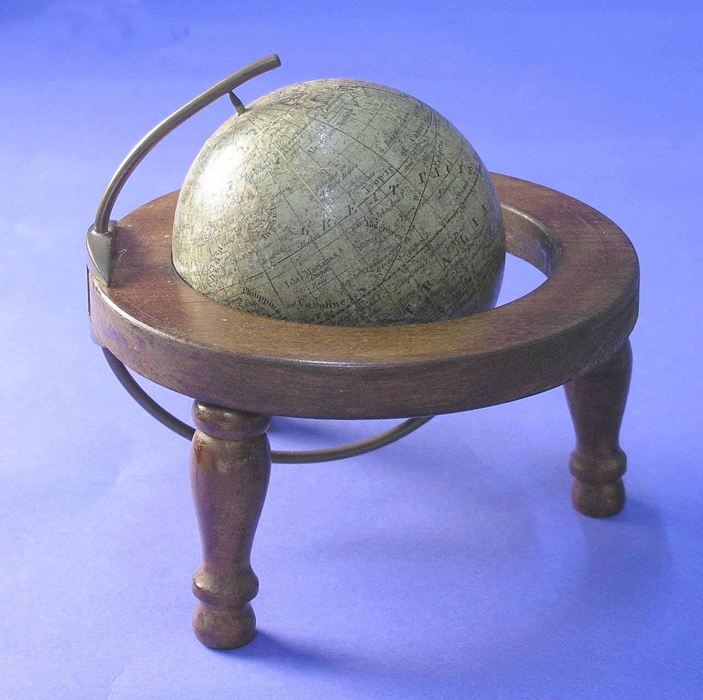
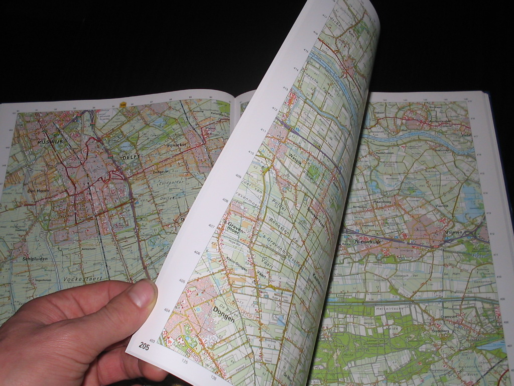

🌐 1. Глобус
Зменшена об’ємна модель Землі. Дає наочне уявлення про її форму, обертання та взаємне розташування великих об’єктів.
Уявіть, що Ви — команда дослідників планети! Обертайте глобус, розкривайте секрети карт, розшифровуйте умовні знаки й виконуйте маленькі місії. Наприкінці Ви зможете пояснити, чому карта світу не зовсім схожа на справжню Землю.
Авторська навчальна ілюстрація, не точна географічна карта
На багатьох настінних картах Гренландія виглядає майже як Африка. У дійсності площа Африки приблизно в 14 разів більша. Це помилка картографів?
Гіпотеза: Як Ви думаєте, чому площі на деяких картах відрізняються від реальних? Сформулюйте здогад до початку пояснення.
площа Африки, наближено
площа Гренландії, наближено
Ці значення ілюструють спотворення площ на карті Меркатора.
Це справжні навчальні зображення: не вигадані картинки й не випадкові фотографії. Розгляньте їх, порівняйте й натисніть на запитання після галереї.






🎯 Фото-місія: знайдіть найбільш доречне джерело
На якому зображенні найзручніше роздивитися, де саме розташовані Українські Карпати?
Схематична модель: країни та материки показані умовно, не за точними координатами
На глобусі поверхня Землі показана зі збереженням її приблизної кулястої форми. Зручно розуміти форму, ось, полюси, екватор і розміщення материків.
Обмеження: бачимо лише частину планети; невеликий глобус не показує дрібні деталі.
Завдання: Учитель показує глобус і фізичну карту. Яку модель Ви оберете для визначення напрямку між Україною та Австралією? А для детального плану свого міста?
Карта OpenStreetMap. Для перегляду шарів і масштабу потрібен інтернет. Відкрити окремо.
1. На цифровій карті знайдіть Африку, Атлантичний океан та екватор (за потреби відкрийте фізичну карту).
2. Відкрийте Google Earth: поверніть 3D-глобус і знайдіть Україну.
3. Перегляньте реальні супутникові зображення NASA Blue Marble.
Чому супутникове зображення не замінює політичної карти з державними кордонами?
Тут можна помилятися й перевіряти себе багато разів. Головне — зрозуміти, для чого існують різні способи зображення Землі.
🎒 1. Збираємо рюкзак мандрівника
Потрібно знайти дорогу від школи до музею. Що покладемо в рюкзак?
🎯 2. Знайдіть правильні твердження
Оберіть три твердження, які справді правильні.
🔍 3. Яку карту обрати?
🧭 4. Таємні координати
На схематичному глобусі натисніть на екватор, Північний полюс і Південний полюс. Цифрова модель не замінює точного глобуса, але допомагає запам'ятати їхнє розташування.
🧩 5. Читаємо умовні знаки
Ці символи — умовна легенда саме нашої навчальної карти; на реальних картах позначення можуть відрізнятися.
🔁 6. Знайдіть головну відмінність
Доповніть речення.
Спрощена модель збільшення масштабу в проєкції Меркатора. Це не точна географічна карта й не обчислення площ реальних материків.
Поблизу екватора масштаб у проєкції Меркатора спотворюється менше.
Спробуйте пояснити: Чому на такій карті території ближче до полюсів здаються завеликими?
Обмеження моделі: справжні спотворення залежать від картографічної проєкції; існують карти, що зберігають площі краще.
Назвіть два об’єкти, які зручніше вивчати на глобусі, і два — на карті.
Порівняйте карту Меркатора з глобусом: що змінюється у високих широтах і чому?
Доведіть, що вигляд Гренландії на карті не підтверджує її реальну площу. Яке друге джерело треба перевірити?
Зменшена об’ємна модель Землі. Дає наочне уявлення про її форму, обертання та взаємне розташування великих об’єктів.
Зменшене, узагальнене, умовно-знакове зображення земної поверхні на площині, створене за математичними правилами.
Показує, у скільки разів зменшено відстані. На деяких картах масштаб змінюється від місця до місця, тож для вимірювань важливі властивості проєкції.
Символи пояснюють, де дороги, річки, міста, кордони. Значення кольорів і символів шукаємо в легенді карти.
Спосіб перенесення поверхні кулеподібної Землі на площину. Неможливо одночасно без спотворень передати усі площі, форми й відстані.
Фізична карта — для рельєфу й вод; політична — для держав і кордонів; план міста — для вулиць. Обираємо джерело за запитанням.
До перегляду: сформулюйте, чому на уроках потрібні обидві моделі.
Після перегляду: назвіть дві відмінності глобуса та карти. Чому не варто обирати лише одну з них?
Приблизно 71% поверхні нашої планети вкрито водою. Ось чому з космосу її називають Блакитною планетою.
На звичайному глобусі неможливо побачити всі материки одночасно. Доводиться його обертати.
На карті Меркатора вона часто виглядає майже як Африка, хоча площа Африки приблизно у 14 разів більша!
Збережений глобус Мартіна Бегайма створено 1492 року. На ньому ще не було сучасного зображення Америки.
Державні кордони здебільшого умовні лінії. На політичній карті їх позначають, а на звичайному космічному фото — ні.
Погодні карти, карти ґрунтів, доріг і фізичні карти показують різну інформацію. Потрібно обирати відповідну запитанню.
🌟 Бонус: який факт спростовує цю помилку?
«На карті Гренландія більша за Африку, тому і в житті вона більша».
Для 35-хвилинного уроку достатньо короткого фрагмента одного відео. Інші можна переглянути вдома — з конкретними запитаннями.
Запитання: назвіть дві переваги глобуса й дві переваги карти.
Переглянути у YouTubeЗапитання: які відомості можна отримати з фізичної карти?
Переглянути у YouTubeЗапитання: навіщо географи придумали умовні знаки? Яку роботу виконує легенда?
Переглянути у YouTubeУ парах обговоріть: 1. Чому глобус схожий на Землю? 2. Чому карта потрібна, навіть якщо є глобус? 3. Що робити, коли незрозумілий умовний знак?
Відео потребують доступу до YouTube. Якщо вбудований програвач заблокований, відкрийте ролик за посиланням.
Твердження: «Якщо територія здається більшою на карті, вона обов’язково більша насправді».
Прочитайте §22, виконайте тест і одне завдання на вибір. Сторінка підручника у видавництві «Генеза» · електронна версія.
Відео для повторення: «Про що розповідають географічні карти» (українською). Перед тестом згадайте, що саме розкриває легенда карти.
Складіть таблицю «Глобус і карта»: по 2 переваги та по 1 обмеженню.
Знайдіть один об’єкт на цифровій карті й Google Earth; порівняйте, які ознаки видно.
Поясніть приклад Гренландії й Африки: 1 твердження, 2 докази, 1 обмеження.
Тест можна проходити лише після введення імені та прізвища. Він перевіряється на цьому пристрої й самостійно не надсилає відповіді вчителю. Зробіть скриншот картки результату.